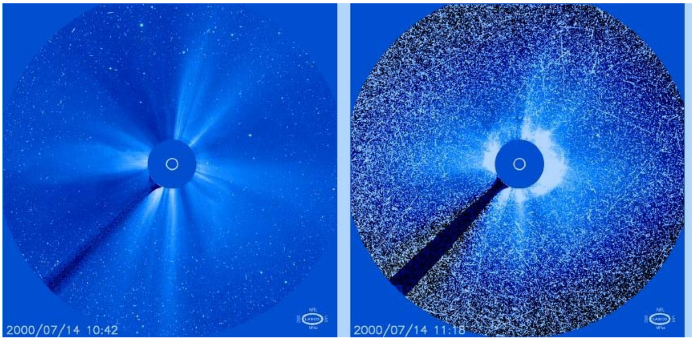
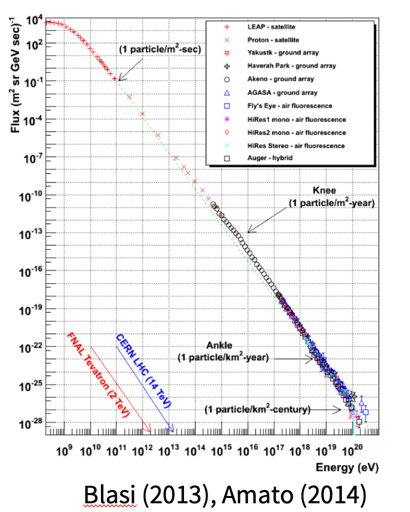
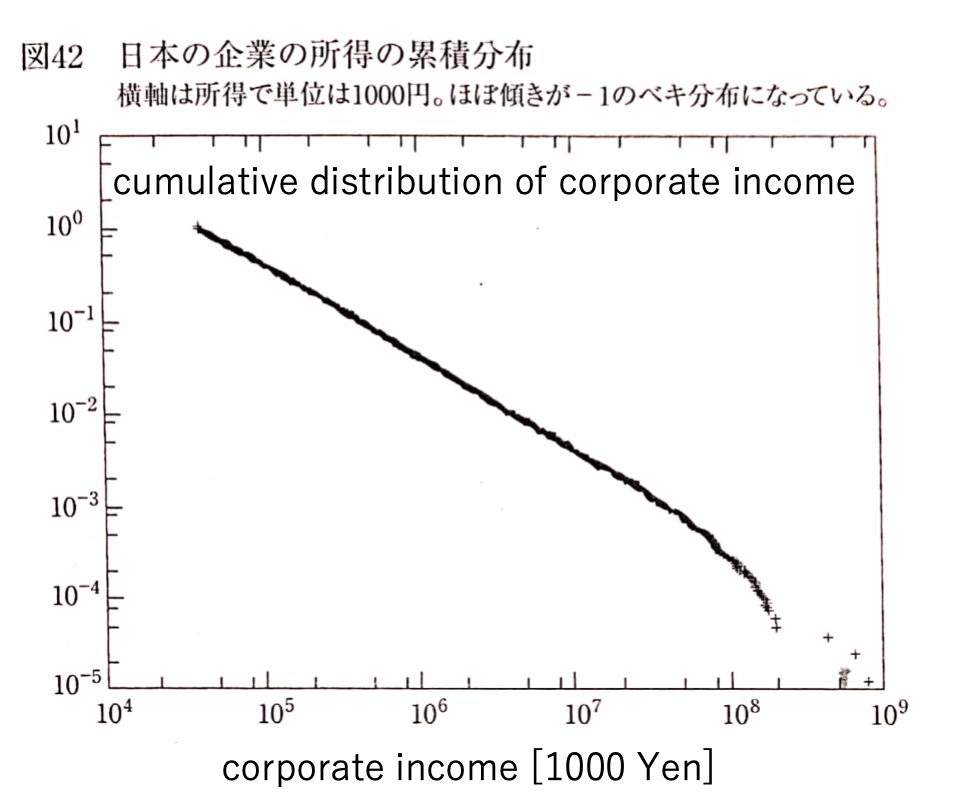
Many of the elementary physical processes are common in all of these applications.
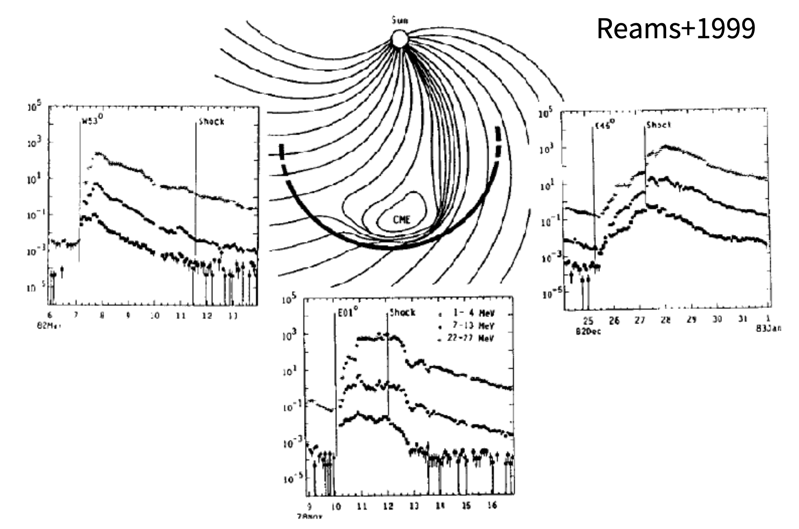
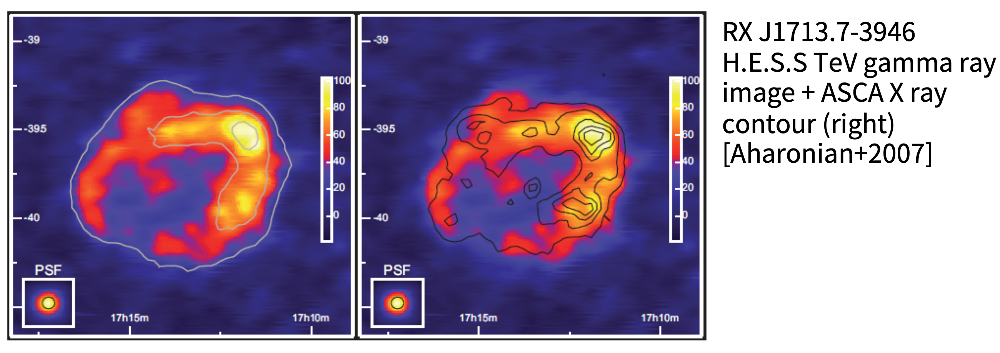
Consider the energy spectrum in a spatially integrated box: \frac{\partial}{\partial t} N(E) + \frac{\partial}{\partial E} \left( \frac{E}{\tau_{\rm acc}} N(E) \right) = - \frac{N(E)}{\tau_{\rm esc}} with the typical acceleration time \tau_{\rm acc}^{-1} \equiv (d E / d t)/E.
In the simplest case where both the acceleration and escape times are energy-independent, the steady-state solution is given by N(E) = N_0 \left( \frac{E}{E_0} \right)^{-q} \quad q \equiv 1 + \frac{\tau_{\rm acc}}{\tau_{\rm esc}}. If the time scales are energy-dependent, the spectrum is not a power-law in general. A physically important quantity is the flux of particles escaping from the system, which is given by \frac{\partial \ln (N/\tau_{\rm esc})}{\partial \ln E} = - \left( 1 + \frac{\tau_{\rm acc}}{\tau_{\rm esc}} + \frac{\partial \ln (\tau_{\rm acc}/\tau_{\rm esc})}{\partial \ln E} \right), which gives a power-law only when the ratio between the two time scales is constant. Therefore, understanding a particle acceleration mechanism to produce a power-law spectrum is essentially to find a specific physical process that gives the acceleration time \tau_{\rm acc} and the escape time \tau_{\rm esc}.
The original idea by Fermi was to consider cosmic rays colliding with molecular clouds. We consider a little more general particle acceleration via random collisions with moving magnetic obstacles.
The conservation of energy in the rest frame of the obstacle (moving with a speed V in the observer’s frame) indicates that the particle energy gain per collision is given by: \frac{\Delta E}{E} \sim 2 \frac{V}{c} \cos \theta, where \theta is the angle between the velocities of the particle and the obstacle. Note that we consider that highly relativistic particles v \sim c.
Averaging over \theta indicates that there is no net energy gain for the particles.
height:280px center
Typical time scale for cosmic-ray collision with the obstacle is \tau_{c} \sim \frac{\lambda_c}{v + V \cos \theta} \quad \text{(non-relativistic)} The probability of collision is proportional to 1/\tau_{c} and P_{c} \propto \frac{1}{\tau_c} \propto (v + V \cos \theta), and is dependent on \theta. Therefore, head-on collisions occur more frequently than overtaking collisions, leading to a finite net energy gain even averaged over \theta.
The expectation for the energy gain is \begin{aligned} \left< \frac{\Delta E}{E} \right> &= \frac {\displaystyle \int_{-1}^{+1} \frac{\Delta E}{E} \mu (1 + \frac{V}{c} \mu) d \mu} {\displaystyle \int_{-1}^{+1} \mu (1 + \frac{V}{c} \mu) d \mu} \qquad \mu = \cos \theta \\ &= \frac{2}{3} \left( \frac{V}{c} \right)^2, \end{aligned} which is second order in V/c. Particles in magnetic turbulence will continuously gain energy in a stochastic manner.
The acceleration time may be estimated as \frac{1}{\tau_{\rm acc}} \sim \left( \frac{1}{\tau_{c}} \frac{\Delta E}{E} \right) \sim \frac{2}{3} \frac{V^2}{\lambda_c c}, where \tau_{c} is the mean collision time and \lambda_{c} \sim c \tau_{c} is the mean free path. This indicates that the acceleration time is independent of energy.
If we assume that \tau_{\rm esc} is also independent of energy, the power-law spectrum is obtained with its index given by q = \tau_{\rm acc}/\tau_{\rm esc} + 1. Otherwise, the spectrum is not a power-law in general.
The first-order Fermi acceleration has been the standard model for the shock acceleration of cosmic rays. The particles gain energy by repeatedly crossing the shock front back and force for many times.
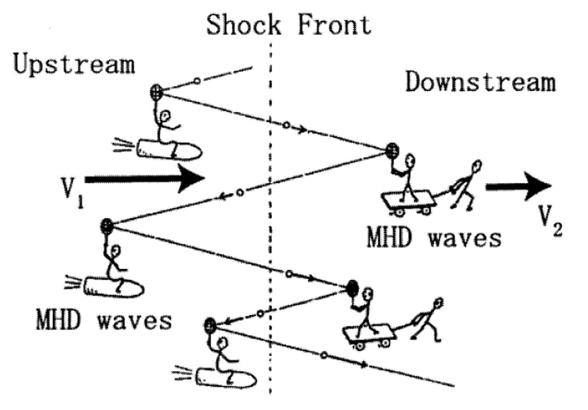
Consider a relativistic particle with the velocity vector forming an angle \theta with respect to the shock normal (pointing toward downstream). The energy gain via a single scattering by an irregularity moving with the velocity V parallel to the shock normal is given by \frac{\Delta E}{E} \approx 2 \frac{V}{c} \cos \theta. Since we consider the scattering by irregularities moving with the background flow, its velocity is either V = V_1 (upstream) or V = V_2 (downstream).
The energy gain per one cycle (i.e., downstream → upstream → downstream) is given by \frac{\Delta E}{E} \approx \underbrace{2 \frac{V_1}{c} \cos \theta_{+}}_ {\rm upstream \, \cos \theta_{+}>0} + \underbrace{2 \frac{V_2}{c} \cos \theta_{-}}_ {\rm downstream \, \cos \theta_{-}<0} where \theta_{+} and \theta_{-} are the incident angles for crossing the shock front from upstream to downstream and from downstream to upstream, respectively.
Considering the number of particles with a pitch angle of \theta_{+} is proportional to \cos \theta_{+} (i.e., the number flux of particles crossing the shock front \propto \cos \theta_{+}), the expectation for \cos \theta_{+} is obtained as \left< \cos \theta_{+} \right> = \underbrace{2}_{\textrm{normalization}} \int_{0}^{\pi/2} \cos \theta_{+} \,\, \underbrace{\cos \theta_{+}}_{\textrm{flux}} \,\, \underbrace{\sin \theta_{+}}_{\textrm{Jacobian}} d \theta_{+} = 2 \int_{0}^{1} \mu^2 d \mu = \frac{2}{3}. The exactly same argument gives \left< \cos \theta_{-} \right> = -2/3.
Therefore, the mean energy gain per one cycle is given by \left< \frac{\Delta E}{E} \right> \approx \frac{4}{3} \frac{V_1 - V_2}{c}, which is first order in V/c. In contrast to the second-order Fermi mechanism, the first-order contribution remains finite because of the systematic jump in the flow velocity across the shock front (i.e., V_1 \neq V_2). The positive energy gain \Delta E > 0 is a consequence of the compression at the hydrodynamic shock.
The mean particle energy after l cycle: \left< E_{l+1} \right> = \left< E_{l} \right> \left( 1 + \frac{4}{3} \frac{V_1 - V_2}{c} \right) \quad \rightarrow \quad \left< E_{l} \right> = \left< E_{0} \right> \left( 1 + \frac{4}{3} \frac{V_1 - V_2}{c} \right)^{l} The angle blacket \left< \right> will be omitted henceforth.
Let us consider the escape probability of particles from the system. The escape probability per cycle in the downstream is given by: \begin{aligned} P_{\rm esc} &= \frac{\text{flux toward far downstream}}{\text{flux from upstream to downstream}} \\ &= \frac {\displaystyle N V_2} {\displaystyle \frac{1}{4\pi} \int_{0}^{2\pi} d \phi \int_{0}^{\pi/2} \sin\theta d \theta \, N c \cos\theta} = \frac{4 V_2}{c}. \end{aligned} Note that we ignore the particle escape toward far upstream.
The probability that a particle remains in the vicinity of the shock after l cycle is given by P_{l} = (1 - P_{\rm esc})^{l} = \left( 1 - \frac{4 V_2}{c} \right)^{l}.
This probability may be related to the energy spectrum as follows: P_{l} = \frac{\text{number of particles with} \, E \geq E_{l}}{\text{total number of particles}} = \frac {\int_{E_l}^{\infty} N(E') dE'} {\int_{0}^{\infty} N(E') dE'} \quad \rightarrow \quad N(E) \propto \frac{d P_{l} (E)}{d E}, where N(E) dE is the number of particle in the energy interval: E \sim E + dE.
The relationship between P_l and E_l is obtained as follows \frac {\ln \left( E_l/E_0 \right) } {\ln P_l} = \frac {\ln \left( 1 + \frac{4}{3} \frac{V_1 - V_2}{c} \right) } {\ln \left( 1 - \frac{4 V_2}{c} \right) } \approx \frac {\frac{4}{3} \frac{V_1 - V_2}{c}} {-\frac{4 V_2}{c}} = -\frac{V_1 - V_2}{3 V_2} \quad \rightarrow \quad P_l \approx \left( \frac{E_l}{E_0} \right)^{\frac{-3 V_2}{V_1 - V_2}}.
Assuming N(E) \propto E^{-q}, we obtain q = \frac{3 V_2}{V_1 - V_2} + 1 = \frac{V_1 + 2 V_2}{V_1 - V_2} = \frac{r + 2}{r - 1} where r = V_1/V_2 is the shock compression ratio.
Particles randomly scattered by turbulence perform random walk. The simplest model considers particles moving with a speed c either in positive or negative directions change its direction randomly every \tau_{c}. The resulting particle distribution is described by the binomial distribution. After n = t/\tau_{c} scatterings, we have
Since the turbulence is convected by the background plasma flow V, the total particle transport should obey the diffusion-convection equation: \frac{\partial f}{\partial t} + V \frac{\partial f}{\partial x} = \frac{\partial}{\partial x} \left( \kappa \frac{\partial f}{\partial x} \right).
The steady-state solution is given by f(x) = A \exp \left(\frac{x}{\kappa/V} \right) + B, where A and B are integration constants to be determined by the boundary condition. This indicates that the typical length scale is given by l_{\rm diff} = \kappa / V, which is called the diffusion length.
It is possible to show that the momentum gain of particles in a finite flow divergence \nabla \cdot \boldsymbol{V} \neq 0 is given by \frac{1}{p} \frac{d p}{d t} = - \frac{1}{3} \nabla \cdot \boldsymbol{V} for both relativistic and non-relativistic particles.
We then finally obtain the following diffusion-convection equation: \frac{\partial}{\partial t} f + V \frac{\partial}{\partial x} f - \frac{1}{3} \frac{\partial V}{\partial x} \frac{\partial f}{\partial \ln p}= \frac{\partial}{\partial x} \left[ \kappa \frac{\partial}{\partial x} f \right], which describes the transport of energetic particles in a turbulent plasma.
Consider the simplest case where the diffusion coefficient is spatially constant in the upstream and downstream regions V = \begin{cases} & V_1 \quad & \text{for} \quad x < 0 \\ & V_2 \quad & \text{for} \quad x > 0 \end{cases} \quad \quad \text{and} \quad \quad \kappa = \begin{cases} & \kappa_1 (p) \quad & \text{for} \quad x < 0 \\ & \kappa_2 (p) \quad & \text{for} \quad x > 0 \end{cases}
We take the boundary condition such that f \rightarrow 0 for x \rightarrow - \infty (far upstream), and \partial f/\partial x \rightarrow 0 for x \rightarrow + \infty (far downstream). We can then write the solution as follows: f(x, p) = \begin{cases} & A_1(p) \exp \left( \frac{x}{\kappa_1/V_1} \right) \quad & \text{for} \quad x < 0 \\ & A_2(p) \quad & \text{for} \quad x > 0 \end{cases}, where A_1(p) and A_2(p) are momentum-dependent functions yet to be determined. By further imposing the continuity of the distribution function at the shock front, we see that A_1(p) = A_2(p) \equiv f_0 (p).
Let us consider a yet another boundary condition by taking the integral of the diffusion-convection equation across the shock front: \lim_{\epsilon \rightarrow 0} \int_{-\epsilon}^{+\epsilon} \left[ V \frac{\partial f}{\partial x} - \frac{1}{3} \frac{\partial V}{\partial x} \frac{\partial f}{\partial \ln p} - \frac{\partial}{\partial x} \left( \kappa \frac{\partial f}{\partial x} \right) \right] dx = 0, \\ \Rightarrow - \frac{1}{3} (V_2 - V_1) \frac{\partial f}{\partial \ln p} \Bigg|_{x=0} - \left[ \kappa \frac{\partial f}{\partial x} \right]_{-0}^{+0} = 0.
We then immediately obtain \ln f_0(p) = - \frac{3 V_1}{V_1 - V_2} \ln p, or f_0(p) \propto p^{\displaystyle - \frac{3 r}{r - 1}} \quad \text{where} \quad r = V_1/V_2. For relativistic particles E \sim p, we have N(E) \propto 4 \pi p^2 f_0(p) \propto E^{-q} \quad \text{with} \quad q = \frac{r + 2}{r - 1}, which is consistent with the result obtained based on the single particle picture.
The upstream and downstream particle residence times during particle acceleration may be estimated as \tau_{1} \sim \frac{2 \kappa_1/V_1}{c/2} = 4 \frac{\kappa_1}{V_1 c}, \quad \quad \tau_{2} \sim \frac{2 \kappa_2/V_2}{c/2} = 4 \frac{\kappa_2}{V_2 c}, where numerical factors are introduced so that the result agrees with more rigorous treatment.
The acceleration time is estimated accordingly \tau_{\rm acc} \sim \left( \frac{1}{E} \frac{d E}{d t} \right)^{-1} \sim \left( \frac{1}{\tau_{1} + \tau_{2}} \frac{\Delta E}{E} \right)^{-1} \sim \frac{3}{V_1 - V_2} \left( \frac{\kappa_1}{V_1} + \frac{\kappa_2}{V_2} \right).
Notice that the escape time may also be estimated by \tau_{\rm esc} \sim \frac{1}{V_2} \left( \frac{\kappa_1}{V_1} + \frac{\kappa_2}{V_2} \right), which gives the spectral index q = 1 + \frac{\tau_{\rm acc}}{\tau_{\rm esc}} = \frac{r + 2}{r - 1}. This confirms that the idea of the box model applies to the shock acceleration problem as well.
The acceleration time explicitly depends on the diffusion coefficient, which is not easily be estimated in general.
To proceed further, we use a phenomenological “Bohm-like” diffusion coefficient: \kappa_1 = \kappa_2 = \frac{1}{3} \lambda_{\rm mfp} c \quad \text{with} \quad \lambda_{\rm mfp} = \xi r_g, where r_g = \gamma m c/ Z e B is the gyroradius and \xi is called a Bohm-factor. The most optimistic case \xi = 1 is called the Bohm limit.
Assuming that the particle acceleration continues during the life time T \sim \tau_{\rm acc} of the shock, the maximum energy may be estimated as E_{\rm max} \sim \frac{20}{3} \frac{Z e B V_1^2 T}{\xi} \sim \frac{3}{20 \xi} \,\, Z e \underbrace{\bigg( \frac{V_1}{c} B \bigg)}_{E} \,\, \underbrace{\bigg( V_1 T \bigg)}_{L}.
Note that the estimate is written in a form: (charge) \times (electric field) \times (distance).
The maximum energy by the first-order Fermi acceleration at SNR shocks is smaller than the knee energy (\sim 10^{15.5} eV) by at least one order of magnitude. E_{\rm max} \sim 1.2 \times 10^{14} \, \left( \frac{1}{\xi} \right) \left( \frac{V_1}{3000 \, {\rm km/s}} \right)^{2} \left( \frac{B}{10 \, {\rm \mu G}} \right) \left( \frac{t}{3000 \, {\rm yrs}} \right) \, \text{[eV]}
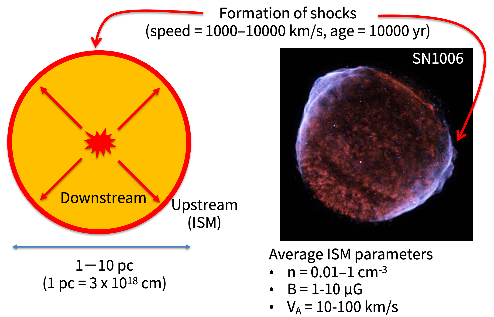
Solar protons of GeV energies cause the so-called Ground Level Enhancements (GLEs) measured at Earth. GLEs seem to be produced by a shock wave propagating near the sun. The maximum energy may be estiamted as: E_{\rm max} \sim 0.9 \times 10^{9} \, \left( \frac{1}{\xi} \right) \left( \frac{V_1}{1000 \, {\rm km/s}} \right)^{2} \left( \frac{B}{0.1 \, {\rm G}} \right) \left( \frac{t}{600 \, {\rm s}} \right) \, \text{[eV]}
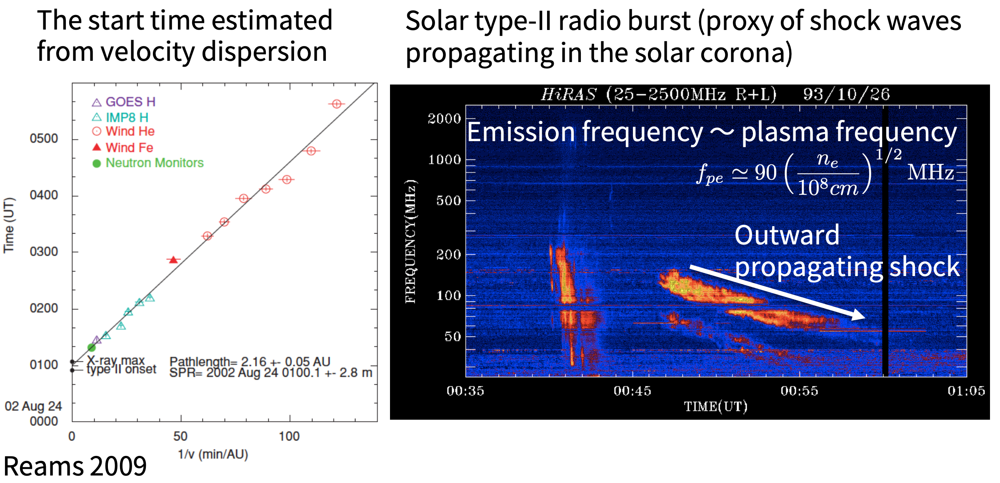
Since the maximum energy obtained by DSA is proportional to V B L (shock speed, magnetic field, and system size), we can consider that objects with large magnetic field strength and system size are possible sources of cosmic rays in the universe.
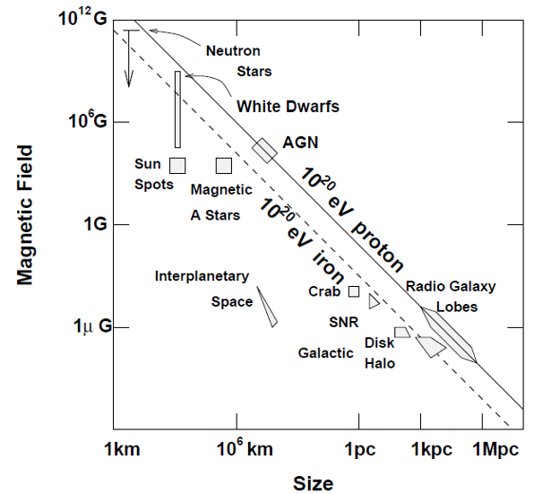
Let us consider a charged-particle with a charge of q and a mass of m interacting with a circularly polarized parallel propagating Alfven wave, which is given by \begin{cases} & B_x =+ B_w \cos ( k z - \omega t ) \\ & B_y =- B_w \sin ( k z - \omega t) \\ & B_z = B_0 \end{cases} , \quad \begin{cases} & E_x =+ \frac{\omega}{k c} B_y \\ & E_y =- \frac{\omega}{k c} B_x \\ & E_z = 0 \end{cases} . This is an exact solution for MHD equations even with a finite amplitude. We define the phase of the wave by \psi = k z - \omega t.
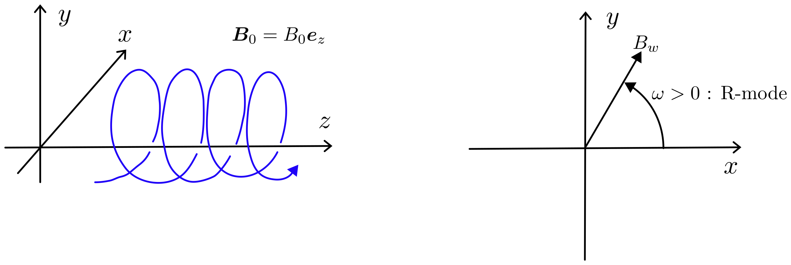
Let us describe the particle velocity with (v_{\perp}, v_{\parallel}, \phi) where \phi is the gyrophase. From the equation of motion, we have \begin{cases} \dfrac{d v_{\perp}}{dt} = - \left( v_{\parallel} - \frac{\omega}{k} \right) \Omega_{w} \sin \zeta \\ \dfrac{d v_{\parallel}}{dt} = v_{\perp} \Omega_{w} \sin \zeta \\ \dfrac{d \zeta}{dt} = - k \left( v_{\parallel} - v_{R} \right) + \left( \omega - k v_{\parallel} \right) \frac{\Omega_{w}}{k v_{\perp}} \cos \zeta \end{cases}, where \zeta = \phi - \psi is the relative phase and \Omega_w = q B_2 / m c, \Omega_{0} = q B_0 / m c, v_{R} = (\omega + \Omega_0) / k. Note that both \Omega_w and \Omega_0 include signs.
We see that the cyclotron resonance condition is given by: \omega - k v_{\parallel} = -\Omega_{0} - If the wave amplitude is small \Omega_{w}/k v_{\perp} \ll 1, the relative phase is constant over time if v_{\parallel} = v_{R}, indicating a resonance between the wave and the particle’s cyclotron motion. - The resonance occurs when the Doppler shifted frequency seen by the particle is equal to the cyclotron motion. (Notice that we have defined that \omega > 0 is a R-mode.)
Direct substitutions confirm that the following two quantities are constants of motion \begin{aligned} & \epsilon = \frac{1}{2} m \left( v_{\parallel} - \frac{\omega}{k} \right)^2 + \frac{1}{2} m v_{\perp}^2 \\ & \chi = \frac{1}{2} m \left( v_{\parallel} - v_{\rm R} \right)^2 - \frac{m \Omega_w v_{\perp}}{k} \cos \zeta \end{aligned} which describe characteristics of pitch-angle scattering even with a finite amplitude wave.
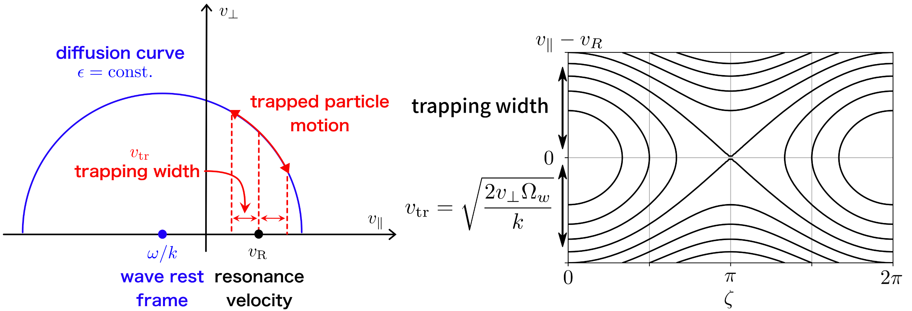
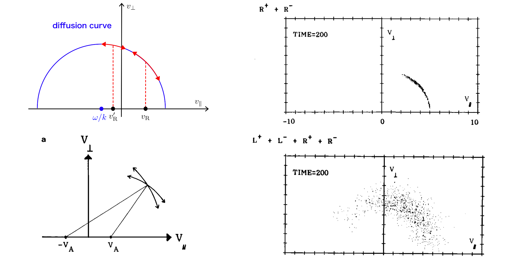
Particle transport in the presence of waves may be described by \frac{\partial}{\partial t} f + \boldsymbol{v} \cdot \frac{\partial}{\partial \boldsymbol{x}} f = \frac{\partial}{\partial \mu} \left( (1 - \mu^2) D_{\mu\mu} \frac{\partial f}{\partial \mu} \right) + \frac{1}{p^2} \frac{\partial}{\partial p} \left( p^2 D_{pp} \frac{\partial f}{\partial p} \right) where \mu = \cos \theta is the pitch angle cosine.
The diffusion coefficients are calculated by \begin{aligned} & D_{\mu\mu} = \left< \frac{\Delta \theta^2}{2 \Delta t} \right> \quad \text{or} \quad (1 - \mu^2) D_{\mu\mu} = \left< \frac{\Delta \mu^2}{2 \Delta t} \right> \\ & D_{pp} = \left< \frac{\Delta p^2}{2 \Delta t} \right> \sim D_{\mu\mu} \left( \frac{V_{\rm A}}{v} \right)^2 \end{aligned} where \Delta \theta and \Delta p are random changes of momentum per scattering in pitch angle and radial momentum, respectively. Repeat scatterings result in diffusion in momentum.
The diffusion in energy is negligible for sufficiently high-energy particles with V_{\rm A}/v \ll 1. Quasi-linear theory relates the fluctuation wave power and D_{\mu\mu} via: D_{\mu\mu} = \frac{\pi}{4} \frac{k_{\rm R} P(k_{\rm R})}{B_0^2} \Omega_0 \quad {\rm where} \quad k_{\rm R} = \Omega_0 / v \mu
Let us consider a 1D system along B-field. The pitch-angle diffusion equation in the laboratory frame is given by \frac{\partial}{\partial t} f + (V + v \mu) \frac{\partial}{\partial x} f = \frac{\partial}{\partial \mu} \left( (1 - \mu^2) D_{\mu\mu} \frac{\partial f}{\partial \mu} \right), where (v, \mu) are defined in the fluid rest frame and we have assumed V \ll v.
Expanding the distribution function using Legendre polynomials: f(v, \mu) = f_0(v) + \frac{1}{2} \mu f_1(v) + O(\mu^2), where weak anisotropy f_1 / f_0 \sim 1/D_{\mu\mu} \sim O(\epsilon) \ll 1 is assumed. To leading order, we obtain the diffusion-convection equation for the isotropic part of the distribution function f_0(x): \frac{\partial}{\partial t} f_0 + u \frac{\partial}{\partial x} f_0 = \frac{\partial}{\partial x} \left[ \frac{v^2}{6 D_{\mu\mu}} \frac{\partial}{\partial x} f_0 \right] = \frac{\partial}{\partial x} \left[ \kappa \frac{\partial}{\partial x} f_0 \right], where \kappa = v^2/(6 D_{\mu\mu}) is the spatial diffusion coefficient.
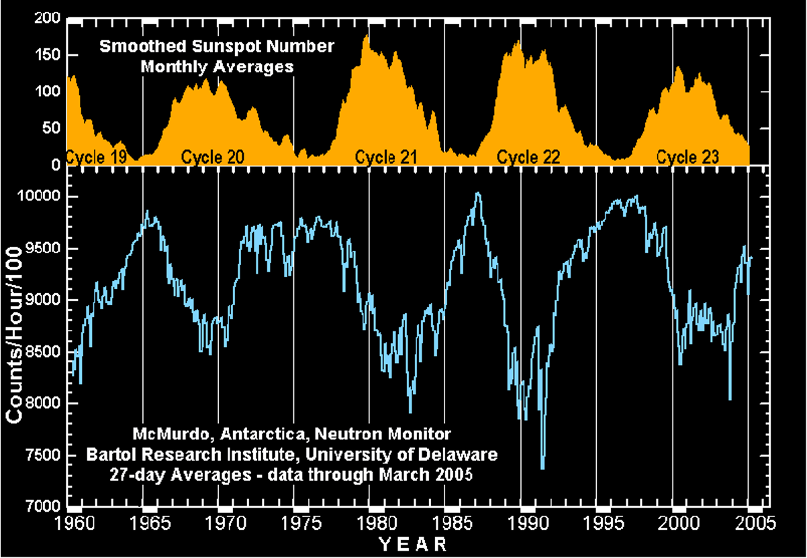
Space Plasma Physics I (T. Amano)